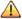

Para crear una nueva capa es necesario que ésta sea incluida en una familia o categoría de capas. Además debe dársele un nombre y una descripción para poder referirse a ella dentro del sistema, así como un ACL o grupo de permisos.
El proceso de creación de una capa es el que sigue:

En dicha lista se mostrarán, para cada una de las columnas, los siguientes datos:


Por todo ello, antes de generar automáticamente las sentencias SQL, habrá que asegurarse de que las variables a utilizar tienen asociados los dominios correspondientes. Además de esto, siempre es recomendable revisar las sentencias generadas para evitar sorpresas futuras a la hora de cargar la capa en el GIS.


 NOTA: La generación de una nueva capa supone la creación de una secuencia SQL sobre el identificador de la tabla que contiene la geometría del esquema de la capa. La creación de esta secuencia puede no realizarse si existe previamente una capa que utilice la misma geometría, por lo que se indica esta circunstancia mediante un mensaje con el siguiente aspecto y se continúa con la grabación de la capa: